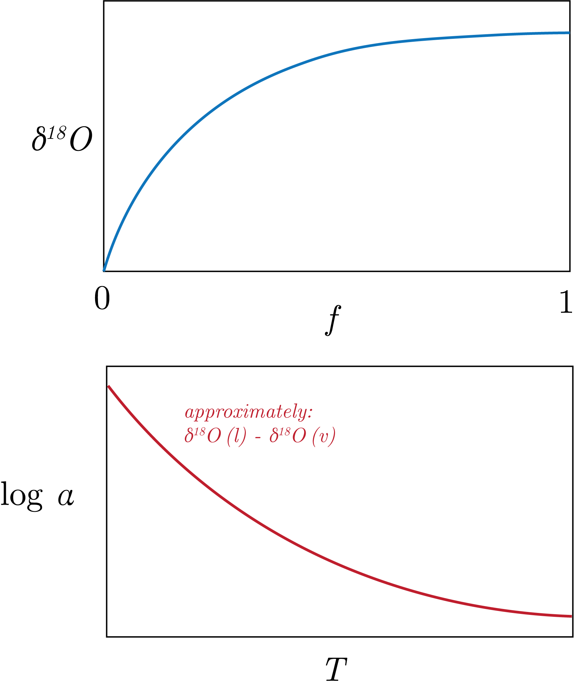
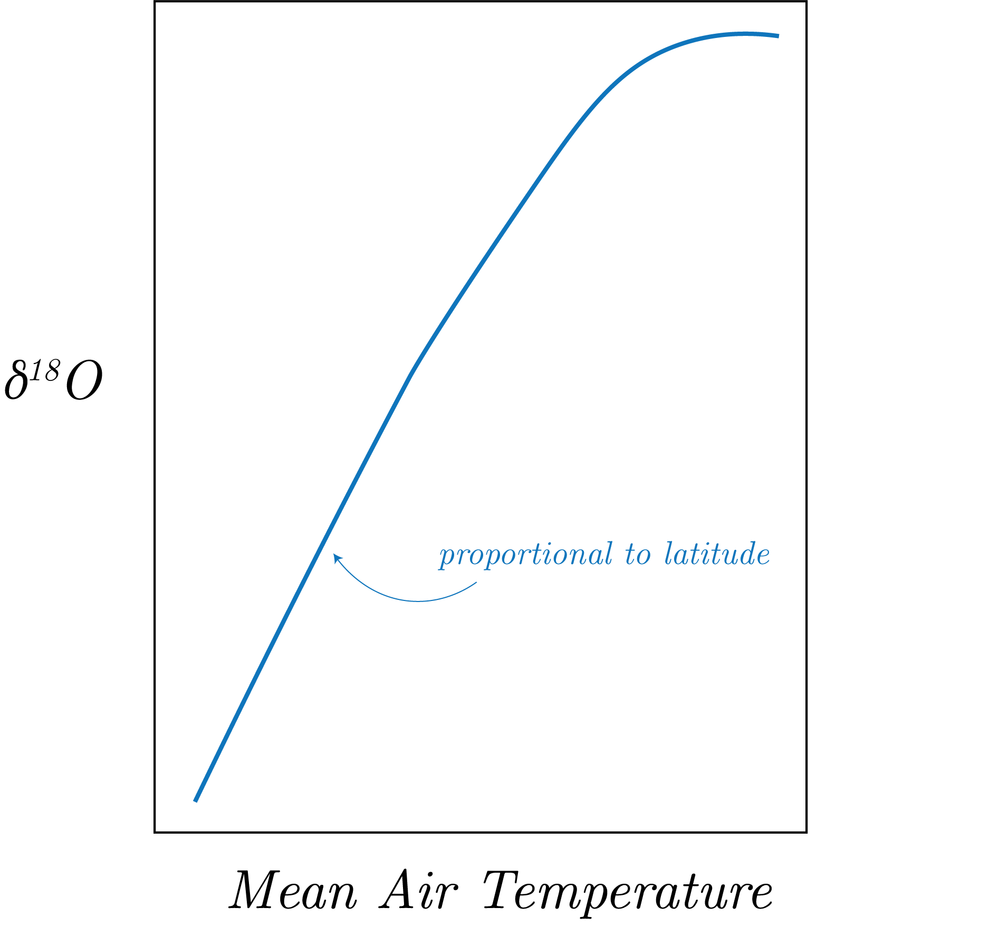
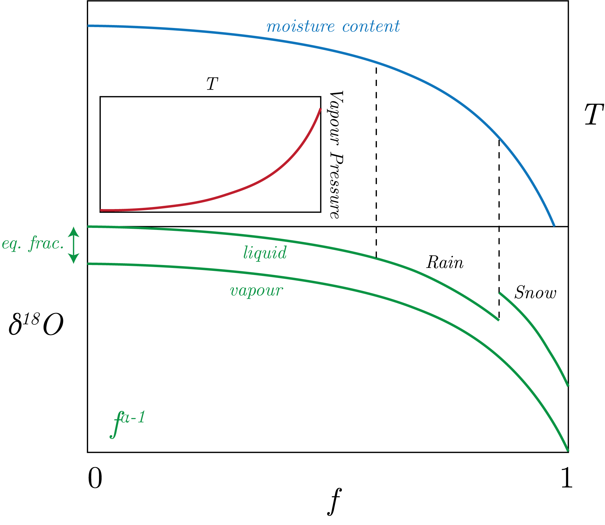
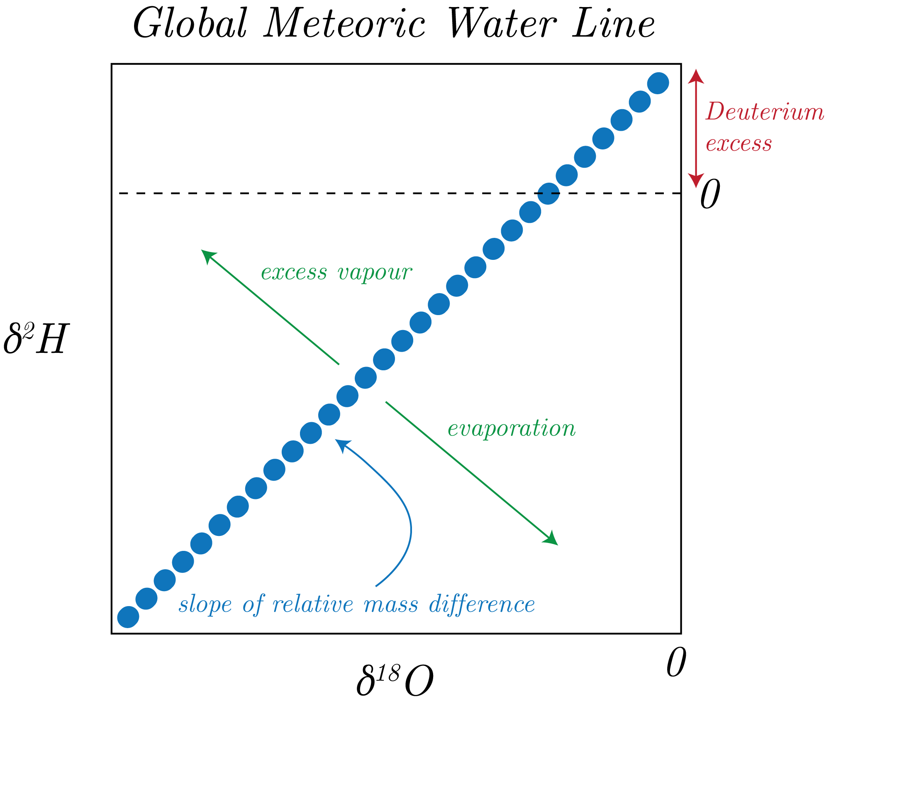
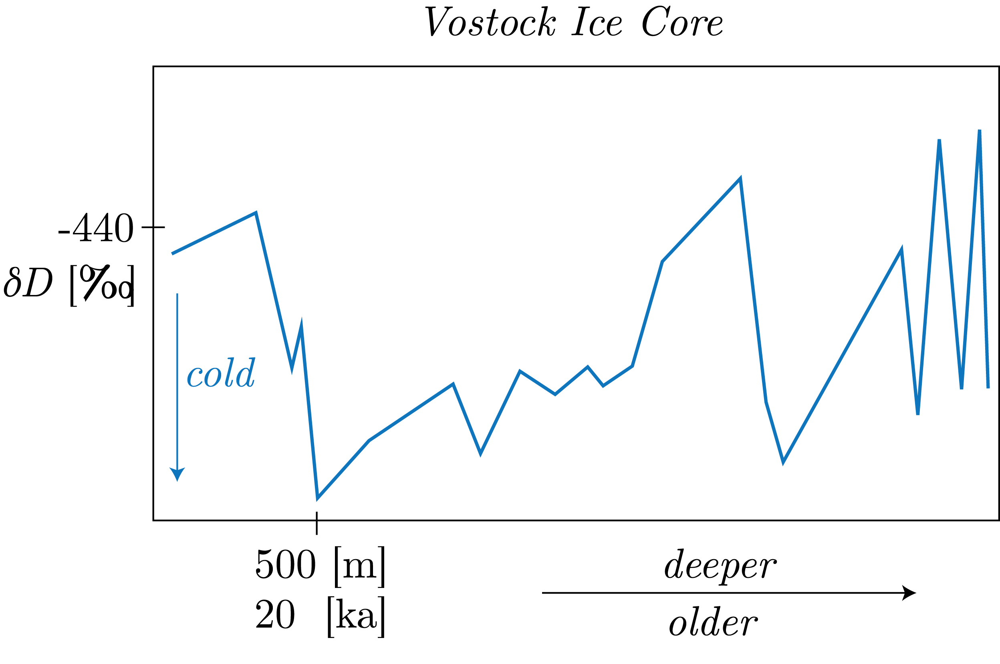

We start by assuming an open system of the form:
\begin{equation}
\text{H}_2\text{O} (v) \to \text{H}_2\text{O} (l),
\end{equation}
with a first order equation of the form:
\begin{equation}
\frac{\textrm{d}A}{\textrm{d}t} = K_A A
\end{equation}
with:
\begin{equation}
K_A = A \exp\left[-E_a / T\right],
\end{equation}
We can take a similar set of equations for a species $B$.
We then get:
\begin{equation}
\alpha = \frac{K_A}{K_B}.
\end{equation}
Dividing out $t$, we get:
\begin{equation}
\frac{\textrm{d}B}{\textrm{d}A} = \alpha \frac{B}{A}.
\end{equation}
Then, if you then solve:
\begin{equation}
\log\left[\frac{B}{B_0}\right] = \alpha \log\left[\frac{A}{A_0}\right],
\end{equation}
for $A_0, B_0$ the initial amounts for $A, B$.
We want to find something of the form $A / B$.
We then take the Taylor Series to get:
\begin{equation}
\frac{B / A}{B_0 / A_0} = \left( \frac{A}{A_0} \right) ^ {\alpha - 1}.
\end{equation}
Here, we assumed that $B \ll A$ (where we have that $A$ is the lighter isotopologue than $B$ of water, i.e. has $^{16}$O vs. $^{18}$O).
Then, this means that $A \sim B + A.$
We note that the fraction remaining of the reactant is:
\begin{equation}
f = \frac{A}{A_0}.
\end{equation}
After all of this, we get that:
\begin{equation}
\frac{A}{A_0} = f \frac{B / A}{B_0 / A_0} f^{\alpha -1 }.
\end{equation}
This then gives:
\begin{equation}
\frac{B}{A} = \frac{B_0}{A_0}f^{\alpha-1}.
\end{equation}
This is an isotope ratio that we care about, and here with heavy over light as is the standard.
Then, switching to $\delta$ notation, we get:
\begin{equation}
\delta^{18}\text{O} \: (l) = f^{\alpha-1}-1.
\end{equation}
Plotting this out looks like the top panel of Fig. 1.

Fig. 1: A diagram of Rayleigh distillation dynamics.
We also note the inverse relationship between fractionation and temperature in the lower panel.
We can see this also in the latitudinal variation of temperature, as in Fig. 2.

Fig. 2: The inverse relationship with temperature and $\delta^{18}$O with latitude.
The Water Cycle
We start with the idea of water vapour pressure.
Here, we first start with the inset of Fig. 3, in which we note that you can fit in more water vapour with increasing temperature.
So, this means that we can change $f$ with the temperature.
Now, let's look at Fig. 3.

Fig. 3: The effect of temperature on oxygen in both liquid and vapour phases.
We can see the proportional effect with temperature, as well as the Rayleigh Equation of $f^{\alpha-1}$ in the $\delta^{18}$O plot with fraction remaining
We now explore just why the ranges of $\delta$D are so much greater than that for O, as in the Global Meteoric Water Line (remembering that this subset has the greatest range in the $\delta$ values for CHONS).
We present the GMWL in Fig. 3.

Fig. 3: The Global Meteoric Water Line.
The slope of the relative mass difference we defined as $\mu$ is understandable given that we can take the approximate fractionation as:
\begin{equation}
\delta_B - \delta_A \sim \log \alpha \times 10^3.
\end{equation}
Then, with $\delta_A=0$ by VSMOW, we get that:
\begin{equation}
\delta_B \sim \log \alpha \times 10^3.
\end{equation}
Therefore, we can get, plugging in for $B$ both D and $^{18}$O and taking the ratio, we get:
\begin{equation}
\delta\text{D} = \frac{\log \alpha_\text{D}}{\log \alpha_{^{18}\text{O}}}\delta^{18}\text{O}.
\end{equation}
Then, we get that the slope is:
\begin{equation}
\frac{\log \alpha_\text{D}}{\log \alpha_{^{18}\text{O}}} \sim 8.
\end{equation}
However, from Fig. 3, we note that there is a non-zero $y$-intercept, which we call the "deuterium excess."
This is from the kinetic isotope effect, which preferentially happens in D over $^{18}$O which cause this excess (as we saw in the $\mu$ calculations).
This is usually about 10 but can be found from:
\begin{equation}
d = \delta \text{D} - 8 \delta^{18}\text{O}.
\end{equation}
We can then look at deviations from the GMWL to determine the processes that the isotope fractionated sample came from.
For a smaller $d$ than expected we get that there is evaporation and greater $d$ means that there is excess vapour.
Ice Core Temperature Reconstructions
We can look at some $\delta$D ice cores, such as in Fig. 4.

Fig. 4: The Vostock Ice Core used for temperature reconstructions.
We note that ice has a non-negligable effect on the isotope composition of the ocean, which allows us to reconstruct temperature.
Specifically, we will talk about mixing here to understand this.
Mixing
We start with 2 pools with isotope composition $\delta_A$ and $\delta_B$.
With mass conservation, we can write the mixing equation as:
\begin{equation}
\delta_{mix} = f_A\delta_A + f_B \delta_B \quad \text{ where} f_A + f_B = 1.
\end{equation}
This then means that we can write this all as:
\begin{equation}
\delta_{mix} = f_A \delta_A + (1 - f_A)\delta_B = f_A\left( \delta_A - \delta_B \right) + \delta_B,
\end{equation}
which implies that:
\begin{equation}
f_A = \frac{\delta_{mix} - \delta_B}{\delta_A - \delta_B}.
\end{equation}
Now, we can assume that all water is either in the ice or in the ocean.
So, applying the equations above, we get:
\begin{equation}
\delta_{mix,i} = f_{ice,i}\delta_{ice,i} + f_{ocean,i}\delta_{ocean} = \text{constant},
\end{equation}
for $i$ either the Pre-Industrial or the LGM.
With all of this, we get:
\begin{equation}
\delta_{ocean,LGM} = \delta_{ice}\frac{\left( f_{ice,PI} - f_{ice,LGM} \right) }{f_{ocean,LGM}}.
\end{equation}